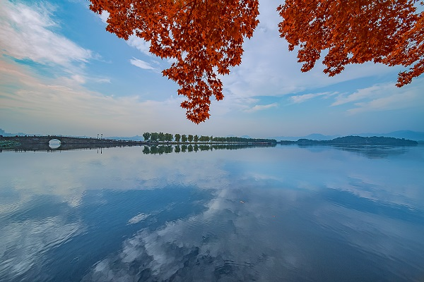
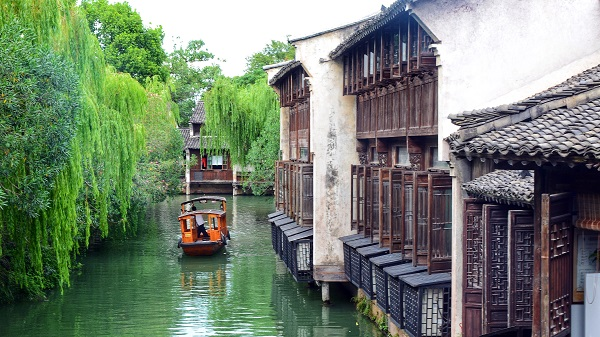

杭州景色
★第二站-千岛湖：这里有“天下第一秀水”之称，也是农夫山泉的水源地，乘船登千岛湖一千多岛屿之一的桂花岛，也称猴岛，在这森林氧吧里尽情畅游！

★第二站-千岛湖：这里有“天下第一秀水”之称，也是农夫山泉的水源地，乘船登
千岛湖一千多岛屿之一的桂花岛，也称猴岛，在这森林氧吧里尽情畅游！
★第四站-苏州：游览苏州园林—拙政园（国家5A级景区），中国四大名园之一，
被誉为中国园林之母；登寒山寺，体会“姑苏城外寒山寺，夜半钟声到客船”的意境，
还有七里山塘街，苏东坡笔下“到苏州而不游虎丘乃是憾事”的吴中第一名胜虎丘也
不要错过啦！
